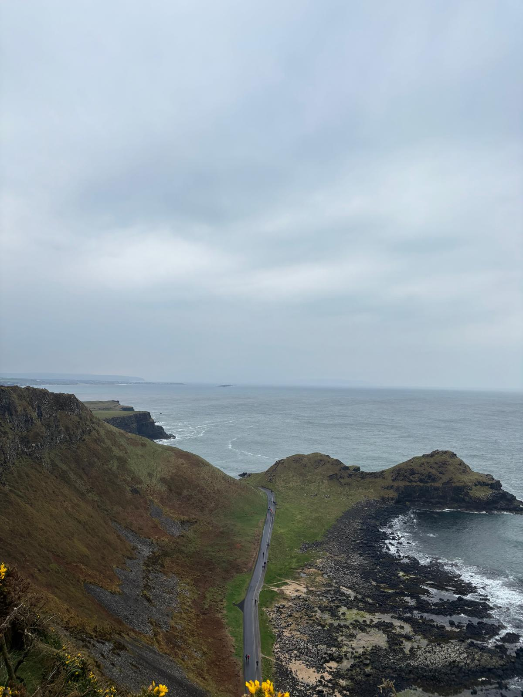

Featured Journey
Where the ocean meets stone: a morning at Giant's Causeway
Wind, salt, basalt and legend — the Causeway remains one of those places that feels older than memory itself.
Northern Ireland Travel Notes Since 2026

Featured Journey
Wind, salt, basalt and legend — the Causeway remains one of those places that feels older than memory itself.
Community Journal
"The cliffs were pale in the mist, and the sea looked like old glass."
"I stood there longer than planned. Some places ask you to be quiet."
"White cottages, narrow lanes and the feeling that time had softened."
Map of Memories
For moody photographs and old-road atmosphere.
For waterfalls, moss, woodland paths and quiet air.
For sea wind, stone walls and cinematic coastal views.
For cliffs, history and a dramatic view over Downhill beach.
For ancient ruins, clifftop drama and the feeling of lost grandeur.
Send a Note
Tell us about a place that stayed with you — a beach, a forest, a castle, a road, a village or a view.